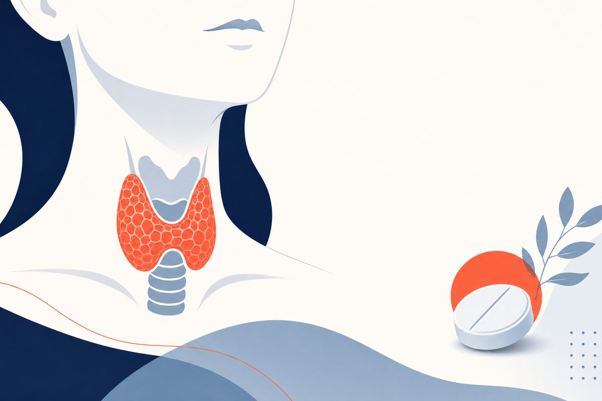

Key Clinical Points
- Levothyroxine (T4) remains the standard of care for treating hypothyroidism, according to the 2014 American Thyroid Association (ATA) guidelines.[1]
- The full replacement dose on the Synthroid label is 1.6 mcg/kg/day, with a lower starting dose for older adults and people with heart disease or at risk of atrial fibrillation.[2]
- Recheck TSH 6 to 8 weeks after any dose change; once the dose is stable, the label advises a check every 6 to 12 months.[2]
- Hashimoto's disease is the most common cause of hypothyroidism.[6] Iodine deficiency is the most common cause in many parts of the world but is rare in the U.S. because of iodized table salt.[8]
- For subclinical hypothyroidism with a TSH below 10 mIU/L, the treatment decision is tailored to the individual; most patients do not benefit unless TSH is above 10 or TPO antibodies are elevated.[14][8]
- Take levothyroxine on an empty stomach, 30 to 60 minutes before eating, and 4 hours apart from drugs that reduce its absorption, such as calcium and iron.[2][8]
- Women with treated hypothyroidism who become pregnant usually need about 30% more levothyroxine, often taken as 9 doses per week instead of 7.[8][3]

What Is Hypothyroidism?
The thyroid gland, a butterfly-shaped structure at the front of the neck, produces two hormones, thyroxine (T4) and triiodothyronine (T3), that regulate metabolism across virtually every organ system. Hypothyroidism occurs when the thyroid produces less hormone than the body requires.
Clinical (overt) hypothyroidism affects about 1 in 300 people in the United States, with a higher prevalence among women and older adults, and subclinical hypothyroidism is present in about 3.7% of the U.S. population.[8] Many people don't notice symptoms for months or even years.[6]
The term "underactive thyroid" covers a spectrum. Overt hypothyroidism means clearly low thyroid hormone levels with an elevated TSH (the pituitary's signal demanding more hormone). Subclinical hypothyroidism means the TSH is elevated but free T4 remains within the reference range, so the gland is struggling but still compensating. Both have implications for treatment decisions.
Causes: Why the Thyroid Slows Down
Hypothyroidism has several causes, with Hashimoto's thyroiditis at the top of the list.
Hashimoto's Thyroiditis
Hashimoto's thyroiditis is an autoimmune condition in which the immune system mistakenly targets and destroys thyroid tissue. It is the most common cause of hypothyroidism.[6] The immune system produces antibodies, most notably thyroid peroxidase antibodies (TPO-Ab), that progressively damage hormone-producing cells.
The destruction does not happen overnight. Patients may spend years in a phase of fluctuating thyroid function before developing overt hypothyroidism. Some experience a temporary period of mild hyperthyroidism ("Hashitoxicosis") early in the disease, caused by the release of stored hormone from damaged cells. TPO antibody testing is used to confirm autoimmune disease as the underlying cause.
Your risk of Hashimoto's is higher if others in your family have thyroid disorders, and having another autoimmune disease, such as rheumatoid arthritis, type 1 diabetes or lupus, also increases risk.[7] If you have one autoimmune disease, thyroid screening is worth discussing with your physician.
Other Common Causes
- Thyroid surgery: Partial or complete removal of the thyroid (thyroidectomy) reduces or eliminates hormone production. Patients undergoing total thyroidectomy require full thyroid hormone replacement for life.
- Treatment for hyperthyroidism: Radioactive iodine or antithyroid medications can leave the thyroid underactive.[8]
- Medications: Amiodarone, immune checkpoint inhibitors used in cancer treatment, interleukin-2, interferon-alfa, lithium and tyrosine kinase inhibitors can all cause hypothyroidism.[8]
- Pituitary or hypothalamic disease (central hypothyroidism): Rare. TSH is inappropriately normal or low even though thyroid hormone is low, so the thyroid is not signaled to make enough hormone.[8]
- Iodine deficiency: The most common cause of hypothyroidism in many parts of the world, but rare in the U.S. because of iodized table salt.[8]
Symptoms: Why Hypothyroidism Gets Missed
Thyroid hormone acts as a metabolic accelerator for most body systems. When levels are low, everything slows down, sometimes so gradually that patients adapt without realizing something is wrong.
Common symptoms include cold intolerance, fatigue, weight gain, dry skin, constipation and voice changes.[8] Some people also notice trouble concentrating, memory lapses or a general mental fogginess, which can be hard to describe.
Fatigue, low mood, weight gain, poor sleep and cognitive slowing can occur with both hypothyroidism and depression. Because the signs and symptoms of thyroid dysfunction are nonspecific, the diagnosis rests on blood levels of TSH and free T4 rather than symptoms alone.[8] If you have new low mood along with other symptoms on this page, it is reasonable to ask whether a TSH test makes sense.
Physical examination findings include bradycardia (slow heart rate), delayed relaxation of deep tendon reflexes, puffy face and periorbital edema, a hoarse voice, and goiter in some patients. These are more prominent in overt, long-standing hypothyroidism than in early or subclinical disease.
Diagnosis and TSH Interpretation
Diagnosis starts with a serum TSH (thyroid-stimulating hormone) level. TSH is produced by the pituitary gland to signal the thyroid to produce hormone. When thyroid output is low, the pituitary compensates by producing more TSH, so TSH can rise before free T4 falls out of the reference range. A serum TSH is the single best screening test for primary thyroid dysfunction in most outpatient situations.[14]
| TSH Range | Classification | Clinical Approach |
|---|---|---|
| About 0.4 to 4.0–4.5 mIU/L | Normal | Usual reference range: the low end is 0.4 mIU/L and the upper end is 4.0 to 4.5 mIU/L.[8] Labs set their own ranges. |
| Above the range but below 10 mIU/L, normal free T4 | Subclinical hypothyroidism | Individualized decision.[14] AAFP advises a TPO antibody test and a repeat TSH in 6 to 12 months.[8] |
| Above 10 mIU/L, normal free T4 | Subclinical hypothyroidism, higher TSH | Treatment is more often considered. Most patients with subclinical hypothyroidism do not benefit from treatment unless TSH is above 10 mIU/L or TPO antibodies are elevated.[8] |
| High TSH with low free T4 | Overt primary hypothyroidism | Levothyroxine treatment.[8] Confusion, very low body temperature, a slow heart rate or low blood pressure need emergency care (see myxedema crisis below).[12] |
If the TSH is high (above 4.5 mIU/L), a free T4 (FT4) level should be obtained to tell subclinical from overt disease.[8] Free T4 also matters when central hypothyroidism is suspected, because TSH can be inappropriately normal or low despite low thyroid hormone.[8]
TPO antibody testing points to autoimmune thyroid disease as the cause and helps predict progression. Patients with elevated TPO antibody titers are at increased risk of progression to clinical hypothyroidism.[8]
Levothyroxine: First-Line Treatment
Levothyroxine (brand names: Synthroid, Levoxyl, Tirosint, Unithroid) is the standard treatment for hypothyroidism. The 2014 ATA guidelines concluded that levothyroxine should remain the standard of care.[1] It is a synthetic form of T4, the main hormone your thyroid makes, and the body's tissues convert it into the active T3 form.[3]
Dosing
The Synthroid label gives a full replacement dose of 1.6 mcg/kg per day.[2] For a 70 kg (154 lb) adult, that works out to about 112 mcg daily. An AAFP review gives a starting range of 1.5 to 1.8 mcg/kg per day for adults under 60.[8] In practice, the dose needed depends on how much thyroid function remains, body weight or lean body mass, and the TSH level.[3]
For older adults, people with heart disease and anyone with long-standing untreated hypothyroidism, a smaller starting dose such as 25 to 50 mcg is used and raised step by step to full replacement, to avoid triggering cardiac ischemia.[3] AAFP gives 12.5 to 50 mcg per day as the starting range for patients older than 60 or with known or suspected ischemic heart disease.[8] In these groups the label advises titrating every 6 to 8 weeks.[2]
For most adults, the label calls for titrating in 12.5 to 25 mcg increments every 4 to 6 weeks as needed, and advises checking TSH 6 to 8 weeks after any change in dosage.[2] Once the dose is stable and appropriate, the label advises checking clinical and lab response every 6 to 12 months, and AAFP suggests a recheck in one year, or sooner if symptoms change.[2][8] Weight changes, hormonal changes, pregnancy, other medical conditions and new medicines can all change the dose you need.[3]
Brand vs. Generic: The Bioequivalence Debate
Brand-name Synthroid and generic levothyroxine products are FDA-approved. For most patients, either works well. The concern is switching between products, brand to generic or one manufacturer to another: switching between preparations can be associated with under- or overtreatment, and products that meet bioequivalence criteria can still differ enough to matter because levothyroxine has a narrow therapeutic index.[3]
If your product changes (often because of insurance or pharmacy changes), tell your physician so they can decide whether an earlier TSH check is needed.
How and When to Take It
Levothyroxine is absorbed best on an empty stomach, and taking it at other times of day can raise the dose needed.[3] The label instructs taking it as a single daily dose, on an empty stomach, one-half to one hour before breakfast.[2] Some patients find bedtime easier: a 2021 systematic review concluded that morning and bedtime dosing are equally effective.[13]
Medication Interactions That Matter
Several common medications and supplements significantly reduce levothyroxine absorption. These interactions are usually avoided by separating levothyroxine from the interfering substance.[4]
| Substance | Effect | Recommended Separation |
|---|---|---|
| Calcium supplements (carbonate or citrate) | Can bind levothyroxine in the gut and reduce absorption[2][4] | At least 4 hours apart[2][8] |
| Iron supplements (ferrous sulfate, etc.) | Reduces levothyroxine absorption[4] | At least 4 hours apart[2][8] |
| Proton pump inhibitors (omeprazole, pantoprazole, etc.) | Lower stomach acid and change stomach pH, which can reduce absorption[2] | Tell your physician; acid-lowering therapy has been linked to frequent levothyroxine dose changes[3] |
| Antacids (aluminum/magnesium-containing) | Aluminum hydroxide reduces levothyroxine absorption[4] | At least 4 hours apart[2][8] |
| Cholestyramine / bile acid sequestrants | Reduce levothyroxine absorption[4] | Take levothyroxine at least 4 hours before these drugs, or monitor TSH[2] |
| Coffee (regular or espresso) | Coffee is among the foods with the greatest effect on absorption[4]; the evidence is limited but points to decreased absorption[13] | Keep a proper time interval between levothyroxine and coffee; take tablets 30 to 60 minutes before eating[13][8] |
| Soy products / high-fiber foods | Soy reduces absorption; the effect of fiber is not yet fully understood[4] | Take tablets 30 to 60 minutes before eating; dose adjustment may be needed if taken regularly within an hour of certain foods[2][8] |
Gastrointestinal conditions and medicines such as iron, calcium and acid-lowering therapies have been associated with difficulty controlling hypothyroid symptoms and frequent changes in levothyroxine dose.[3] When TSH stays high despite good adherence, a full review of medicines and supplements is worth doing.
Subclinical Hypothyroidism: When to Treat and When to Watch
Subclinical hypothyroidism is an elevated TSH with a normal free T4. It is present in about 3.7% of the U.S. population and is common in people 65 and older.[8] The central clinical question is always: does this patient benefit from treatment, or will treatment add risk without meaningful benefit?
The 2012 AACE and ATA guideline states that the decision to treat subclinical hypothyroidism when TSH is below 10 mIU/L should be tailored to the individual patient.[14] An AAFP review adds that most patients with subclinical hypothyroidism do not benefit from treatment unless TSH is above 10 mIU/L or TPO antibodies are elevated.[8] Factors your physician may weigh include:
- Symptoms: Recent trials have shown that levothyroxine is hardly effective in improving symptoms associated with subclinical hypothyroidism, so symptoms alone are a weaker reason to treat than many people expect.[9]
- TPO antibody status: Elevated TPO antibodies point to autoimmune thyroiditis and raise the risk of progression to clinical hypothyroidism.[8]
- Cardiovascular risk: Subclinical hypothyroidism has been associated with depression, cognitive impairment, hyperlipidemia and coronary artery disease, but there is no evidence that treating it improves outcomes.[8]
- Age: In a randomized trial of 737 adults aged 65 and older with persisting subclinical hypothyroidism, levothyroxine provided no apparent benefit.[5] Overtreatment should particularly be avoided in older adults, and overtreatment carries a risk of accelerated bone loss, mainly in postmenopausal women.[3]
- Pregnancy: Different rules apply. During pregnancy, TSH is judged against trimester-specific reference ranges (see below).[2]
A single mildly high TSH is not a diagnosis. AAFP advises that this finding should prompt a TPO antibody test and a repeat TSH in 6 to 12 months.[8] Unnecessary treatment is a real concern: a 2019 review notes accumulating evidence that many people whose diagnosis was never well documented stay on levothyroxine longer than necessary.[3]
Alternative Thyroid Therapies: T4/T3 Combination and Desiccated Thyroid
TeleDirectMD medication scope: This section is educational. TeleDirectMD prescribes levothyroxine (or Tirosint) only for hypothyroidism and does not prescribe, refill, or transfer Armour Thyroid, NP Thyroid, Nature-Throid, WP Thyroid, any natural desiccated thyroid (NDT) product, liothyronine (Cytomel/T3), or compounded T3/T4 combination therapy under any circumstances. Patients interested in these alternatives should discuss them with their primary care provider or an endocrinologist.
Most patients do well on levothyroxine alone. But some people treated with levothyroxine who reach a normal TSH continue to have symptoms, most often complaints about energy and fatigue, weight, memory and mood.[9] This has driven sustained interest in alternative thyroid hormone formulations.
Combination T4/T3 Therapy (Levothyroxine + Liothyronine)
Adding liothyronine (synthetic T3, brand name Cytomel) to levothyroxine provides both thyroid hormones directly. One proposed explanation for persistent symptoms is low T3 in tissues, and it has been suggested that a variant in the deiodinase 2 gene (Thr92Ala), the enzyme that converts T4 to T3, may change thyroid hormone availability in tissues.[9]
The 2014 ATA guidelines found no consistently strong evidence that combination therapy or thyroid extract is superior to levothyroxine alone in improving health outcomes.[1] Expert views differ on what to do next: one review says combination therapy can be considered for persistent symptoms despite a normal TSH, while the AAFP review recommends against adding T3 even in that situation.[9][8] Both stress looking for other causes of persistent symptoms first.[9][8]
Levothyroxine itself has a long half-life of about 7 days, which is one reason it is the preferred first-line treatment.[3]
Desiccated Thyroid Extract (Armour Thyroid)
Desiccated thyroid extract (DTE), derived from dried porcine (pig) thyroid gland, contains both T4 and T3 in a fixed ratio. Armour Thyroid is the most recognized brand. Thyroid extracts were used before synthetic levothyroxine became available in 1949.[3]
In a randomized, double-blind crossover trial of 70 patients, there were no differences in symptoms or neurocognitive measures between DTE and levothyroxine, but patients lost about 3 lb on DTE, and 48.6% preferred DTE, 18.6% preferred levothyroxine and 32.9% had no preference.[10] A retrospective study of 250 patients, published only as a conference abstract, found that among patients with a normal TSH, 12.8% on Armour Thyroid and 23.2% on levothyroxine had complaints of fatigue and weight gain; adverse effects were more common on Armour Thyroid (8.8% vs 3.2%).[11]
One concern with DTE is overtreatment: use of thyroid extract rather than levothyroxine may be associated with overtreatment.[3] The American Association of Clinical Endocrinologists does not recommend desiccated thyroid hormone.[8]
Hypothyroidism and Pregnancy
Pregnancy significantly increases thyroid hormone demand. The body needs a larger total pool of thyroxine because thyroxine-binding globulin levels and plasma volume rise. The majority of pregnant women need a higher levothyroxine dose, and the need for an increase occurs early in the first trimester.[3]
For women with controlled hypothyroidism who become pregnant, AAFP recommends increasing the levothyroxine dose by 30%, from 7 to 9 doses per week (an extra dose two days per week), with TSH checked every four weeks.[8] A 2019 review notes that TSH can also be kept at goal by ongoing titration based on TSH.[3] The label calls for measuring TSH and free T4 as soon as pregnancy is confirmed.[2]
| Trimester | TSH Goal | Clinical Priority |
|---|---|---|
| First trimester (weeks 1–12) | Within the trimester-specific reference range[2] | Dose needs rise early in the first trimester.[3] If TSH is above the trimester-specific range, the label increases the dose by 12.5 to 25 mcg per day and checks TSH every 4 weeks until it is stable.[2] |
| Second trimester (weeks 13–26) | Within the trimester-specific reference range[2] | Dose requirements tend to stabilize.[3] TSH is measured at least once each trimester.[2] |
| Third trimester (weeks 27–40) | Within the trimester-specific reference range[2] | Few dose changes are generally needed in the third trimester.[3] |
| Postpartum | Return to pre-pregnancy dose[2] | The label reduces the dose to pre-pregnancy levels immediately after delivery and checks TSH 4 to 8 weeks postpartum.[2] |
Because TSH can rise during pregnancy, TSH should be monitored and the levothyroxine dose adjusted throughout pregnancy.[2] If you take levothyroxine and learn you are pregnant, contact your physician right away rather than waiting for your first prenatal visit.
If you have Hashimoto's but are not on treatment and become pregnant, ask your physician or obstetric clinician whether your thyroid function should be checked.
Myxedema Coma: The Extreme End
Myxedema coma is a rare, life-threatening complication of hypothyroidism. Despite the name, coma is not always present, which is why some clinicians call it myxedema crisis; confusion or other changes in mental status are typical.[12]
The biggest risk factor is a long history of untreated hypothyroidism, and being a woman older than 60 also raises risk. Triggers include infections like pneumonia, cold temperatures, surgery, and medicines such as lithium, amiodarone, sedatives and tranquilizers.[12] It is most commonly found in older patients with primary hypothyroidism.[8]
- Confusion, disorientation, or unresponsiveness
- Hypothermia (low body temperature)
- Severe bradycardia (slow heart rate) or low blood pressure
- Slow, shallow breathing
- Swelling (edema)
Treatment typically takes place in an ICU, with levothyroxine (T4) given to raise thyroid hormone levels quickly, sometimes liothyronine (T3), and hydrocortisone.[12] Even with treatment, myxedema coma is fatal for about 2 to 6 out of 10 people.[12] Early recognition is critical.
The preventive message is straightforward: because the biggest risk factor is long-standing untreated hypothyroidism,[12] taking levothyroxine reliably and keeping up with TSH monitoring is the best protection.
Managing Thyroid Disease Through Telehealth
For patients with established hypothyroidism on a stable levothyroxine dose, the ongoing management is largely lab-driven: review TSH results, adjust the dose if needed, and refill the prescription. This workflow often fits telehealth well.
Telehealth visits for thyroid management work like this: you have TSH (and free T4 if indicated) drawn at a local lab. Your physician reviews the results remotely, assesses any symptoms you report, and either confirms the current dose or adjusts it, without an in-person visit.
Telehealth can work well for many people with stable hypothyroidism. Situations that typically call for in-person evaluation include physical examination findings (a suspected goiter, a palpable thyroid nodule, or signs of myxedema), difficulty managing hypothyroidism during pregnancy requiring close obstetric coordination, or a newly diagnosed condition where establishing care in person makes sense.
Once your dose is stable and your TSH is in range, much of your ongoing thyroid care can often happen from home. Regular monitoring, more than regular in-person visits, is what keeps thyroid disease controlled. Emergency symptoms, listed in the myxedema section above, always need in-person emergency care.
Frequently Asked Questions
The Synthroid label gives a full replacement dose of 1.6 mcg/kg/day, with a lower starting dose for older adults and people with heart disease or at risk of atrial fibrillation.[2] Starting doses such as 25 to 50 mcg are used in older adults, people with heart disease and those with long-standing untreated hypothyroidism, and the dose is raised gradually.[3] The label advises checking TSH 6 to 8 weeks after any dose change.[2] Dose adjustment is frequently needed, so expect follow-up labs before your dose is settled.[3]
Both are FDA-approved, and most patients do well on either. The key is consistency: switching between preparations can be associated with under- or overtreatment, because levothyroxine has a narrow therapeutic index.[3] If your pharmacy changes your product, ask whether they can keep you on the same one, and tell your physician so they can decide whether an earlier TSH check is needed.
When TSH is below 10 mIU/L, the 2012 AACE and ATA guideline says the decision should be tailored to the individual.[14] Most patients with subclinical hypothyroidism do not benefit from treatment unless TSH is above 10 mIU/L or TPO antibodies are elevated.[8] In a randomized trial of adults 65 and older with persisting subclinical hypothyroidism, levothyroxine provided no apparent benefit,[5] and overtreatment should particularly be avoided in older adults.[3]
Levothyroxine is absorbed best on an empty stomach, and taking it with food can impair absorption.[3] The label says to take it on an empty stomach, one-half to one hour before breakfast, and at least 4 hours before or after drugs known to interfere with absorption, such as calcium and iron.[2] Soy and coffee have the greatest effect among foods,[4] and keeping a proper time interval between levothyroxine and coffee, calcium or iron helps avoid these interactions.[13] Acid-lowering medicines can also reduce absorption.[2]
The dose usually needs to go up. AAFP recommends that women with controlled hypothyroidism who become pregnant increase the dose by 30%, from 7 to 9 doses per week, with TSH checked every four weeks.[8] The need for more levothyroxine starts early in the first trimester.[3] The label aims to keep TSH within the trimester-specific reference range and reduces the dose to pre-pregnancy levels right after delivery.[2] Contact your physician as soon as you know you are pregnant rather than waiting for your first prenatal visit.
Hashimoto's disease is an autoimmune disorder in which the immune system attacks the thyroid, and it is the most common cause of hypothyroidism.[6] The immune system produces antibodies (mainly TPO antibodies) that gradually damage hormone-producing cells, and elevated TPO antibodies raise the risk of progressing to clinical hypothyroidism.[8] Being diagnosed with Hashimoto's does not automatically mean you need medication; that depends on your TSH and free T4. It does mean regular monitoring is warranted.
The 2014 ATA guidelines concluded that levothyroxine should remain the standard of care and found no consistently strong evidence that combination therapy or thyroid extract is superior.[1] In a randomized crossover trial, desiccated thyroid did not improve symptoms or neurocognitive measures, although about half of patients preferred it.[10] Expert views differ on persistent symptoms with a normal TSH: one review says combination therapy can be considered, while the AAFP review recommends against adding T3.[9][8] TeleDirectMD does not prescribe these alternatives; discuss them with your primary care provider or an endocrinologist.
Myxedema coma is a rare, life-threatening complication of hypothyroidism. Signs include confusion or changes in mental status, low body temperature, a slow heart rate, low blood pressure, slow breathing and swelling.[12] Treatment typically takes place in an ICU with thyroid hormone, and even with treatment it is fatal for about 2 to 6 out of 10 people.[12] The biggest risk factor is a long history of untreated hypothyroidism, so steady treatment and monitoring matter.[12]
Yes. Fatigue, cognitive slowing, low mood, weight gain and sleep problems can occur with both conditions. Because the signs and symptoms of thyroid dysfunction are nonspecific, the diagnosis is based on blood levels of TSH and free T4.[8] Depression and anxiety are also on the list of conditions to consider when symptoms persist despite a normal TSH.[8]
Yes. For most patients with established hypothyroidism on a stable levothyroxine dose, telehealth is a practical and efficient option for ongoing management, dose adjustments based on lab results, and prescription refills. You have TSH drawn at a local lab, the results are reviewed remotely, and your prescription is updated if needed, often with no in-person visit required. TeleDirectMD manages thyroid medication across 40+ U.S. states + DC. Reach us at 678-956-1855 or contact@teledirectmd.com.
References
- Jonklaas J, Bianco AC, Bauer AJ, et al. Guidelines for the Treatment of Hypothyroidism: Prepared by the American Thyroid Association Task Force on Thyroid Hormone Replacement. Thyroid. 2014;24(12):1670–1751. Practice guideline. https://pmc.ncbi.nlm.nih.gov/articles/PMC4267409/
- SYNTHROID (levothyroxine sodium) tablets, prescribing information. AbbVie Inc. Revised February 2024. DailyMed, U.S. National Library of Medicine. Accessed November 15, 2026. https://dailymed.nlm.nih.gov/dailymed/drugInfo.cfm?setid=1e11ad30-1041-4520-10b0-8f9d30d30fcc
- Duntas LH, Jonklaas J. Levothyroxine Dose Adjustment to Optimise Therapy Throughout a Patient's Lifetime. Advances in Therapy. 2019;36(Suppl 2):30–46. Review. https://pmc.ncbi.nlm.nih.gov/articles/PMC6822824/
- Skelin M, Lucijanić T, Amidžić Klarić D, et al. Factors Affecting Gastrointestinal Absorption of Levothyroxine: A Review. Clinical Therapeutics. 2017;39(2):378–403. Review. https://doi.org/10.1016/j.clinthera.2017.01.005
- Stott DJ, Rodondi N, Kearney PM, et al.; TRUST Study Group. Thyroid Hormone Therapy for Older Adults with Subclinical Hypothyroidism. New England Journal of Medicine. 2017;376(26):2534–2544. Randomized controlled trial. https://doi.org/10.1056/NEJMoa1603825
- MedlinePlus. Hypothyroidism. U.S. National Library of Medicine. Last updated August 5, 2026. Accessed November 15, 2026. https://medlineplus.gov/hypothyroidism.html
- Mayo Clinic. Hashimoto's disease: Symptoms and causes. April 30, 2025. Accessed November 15, 2026. https://www.mayoclinic.org/diseases-conditions/hashimotos-disease/symptoms-causes/syc-20351855
- Wilson SA, Stem LA, Bruehlman RD. Hypothyroidism: Diagnosis and Treatment. American Family Physician. 2021;103(10):605–613. https://www.aafp.org/pubs/afp/issues/2021/0515/p605.html
- Wiersinga WM. T4+T3 Combination Therapy: An Unsolved Problem of Increasing Magnitude and Complexity. Endocrinology and Metabolism (Seoul). 2021;36(5):938–951. https://pmc.ncbi.nlm.nih.gov/articles/PMC8566135/
- Hoang TD, Olsen CH, Mai VQ, Clyde PW, Shakir MK. Desiccated Thyroid Extract Compared With Levothyroxine in the Treatment of Hypothyroidism: A Randomized, Double-Blind, Crossover Study. Journal of Clinical Endocrinology and Metabolism. 2013;98(5):1982–1990. https://doi.org/10.1210/jc.2012-4107
- Shah M, Proumen R, Sunkara A, Acharya R, Patel A. A Tale of Two Therapies: A Comparison of Armour Thyroid and Levothyroxine. Journal of the Endocrine Society. 2021;5(Supplement_1):A823–A824. Meeting abstract. https://academic.oup.com/jes/article/5/Supplement_1/A823/6241312
- Cleveland Clinic. Myxedema Coma: Symptoms, Treatment & Management. Last reviewed June 16, 2025. Accessed November 15, 2026. https://my.clevelandclinic.org/health/diseases/myxedema-coma
- Wiesner A, Gajewska D, Paśko P. Levothyroxine Interactions with Food and Dietary Supplements: A Systematic Review. Pharmaceuticals (Basel). 2021;14(3):206. Systematic review. https://pmc.ncbi.nlm.nih.gov/articles/PMC8002057/
- Garber JR, Cobin RH, Gharib H, et al.; American Association of Clinical Endocrinologists and American Thyroid Association Taskforce on Hypothyroidism in Adults. Clinical Practice Guidelines for Hypothyroidism in Adults: Cosponsored by the American Association of Clinical Endocrinologists and the American Thyroid Association. Thyroid. 2012;22(12):1200–1235. Practice guideline. https://doi.org/10.1089/thy.2012.0205